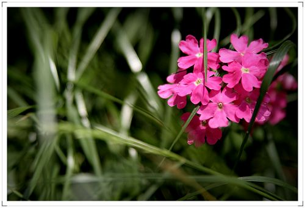
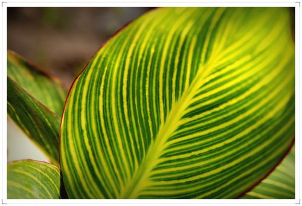

喜欢现在早晚的天气，早晨醒来很清爽，晚上散步很惬意。
晚上在看江宁台的一个古装剧，讲永巷的女人们，也就是宫廷妃子们的斗争。那个演《奶娘》的女主角这会儿演了个心机十足的昭仪。算计到后来失去了皇上这棵大树，今天晚上就要被袁立演的皇太后收拾喽。女人之间的斗争真是太有意思了，心理阴暗争强好胜的产生嫉妒心理，于是硝烟弥漫，却也能铮铮有词地说着正义两个字。
无论好人坏人都是同情弱者的，我姐姐说“博取别人同情没什么不好，做个弱者获得的反而更多，”是这样吗？我关心的是那些善良的被嫉妒的妃子如何在复杂的宫廷里生存下去，不接招是万万不行的，而最终胜出的肯定是理智又智慧的，这也有运气在里面。哎~这荣华贵富与草根贱民谁也别羡慕谁，斗争无处不在，无所谓阶级，无所谓有产无产。
*********************园子里相继开放的花朵********************
自然界是一个大舞台，花朵们从春天开始相继上场。
摸样象菊花，不知其名。在太阳下又是向日葵的摸样；


绿色里的那一抹玫红；

优雅的紫色；

大自然的色彩会象美妙的音乐一样令人毛孔张开；

它和人类一样忙忙碌碌，织着一张弱不经风的网，然后终其一生；

淡淡的花香，成片的长在一起煞是养眼；

风吹过花丛的样子；

这柔软纤细的如头发丝般的草，让人想把脸在上面靠一靠；

*************************午 餐**************************
杭椒牛柳&鱼香肉丝，昨晚溜狗时到附近饭店买回的菜。

**********************DRESS BLOG***********************
对的，都是裤袜惹的祸！中午是左图打扮溜狗的，自然界都要被我雷倒了。
早晨急匆匆的上班，忘了穿袜子，的确有些凉。中午回家随手拿了裤袜穿，配这身裙子很雷人！溜狗前换了白色绣花黑裙，依然雷人。其实裤袜挺酷的，去日本的时候买的，质量很好，到现在都没坏。当然不能因为质量好因为它很酷，就不可能雷人一把？上半身文静下半身嬉皮，象极了我这个矛盾体，一半传统一半叛逆，好在就中午这一会儿雷人，咱一定会换上和谐的袜子再走出家门滴。

26 Responses to “这无处不在的“嫉妒”。”
2009-05-13
那张草拍得太有感觉了
2009-05-13
亲爱的，你是不是也被雷倒了呢？
2009-05-13
超赞那细腻柔软的草，当然可以表现这美的那双眼睛也够有力道。中午太阳这么强，咋不带帽子呢。
2009-05-13
第三张照片花的颜色，很像你昨天的衣服。
第一张是非洲菊吧。
2009-05-13
大家怎么不讨论一下今天这雷人的造型啊？
2009-05-13
这超雷的，在茶博上难得一见。估计好多人都已经被雷到不知所措了。哇哈哈。
2009-05-13
itsmin就是《皇帝新衣》里那个说真话的小孩儿，赞一个！不过下午我没这么雷了，咱换了和谐的袜子，哈哈哈哈哈哈~
2009-05-13
那张遛狗的照片，雷倒我了，往下看，还是有点雷
今天全是“黑白配”吧 你这样的着装倒很少见
“大家怎么不讨论一下今天这雷人的造型啊？”
估计大家都被雷晕了，呵呵
2009-05-13
是的，把大家雷得不知所措，我自己也笑死了~
2009-05-13
是的，也挺好玩的，雷得我笑出声音来了
2009-05-13
起初以为跟你撞鞋，后来留心你在花园溜狗那张，原来你是坡跟滴，贴近脚背那圈也是松紧的吗？
2009-05-13
我一直不知道怎么处理这种到脚踝的裤袜，基本都是长靴或短靴来配；到膝盖的那种打底裤，会用高跟或平跟皮鞋搭，造型挺日系，就是有点雷。
茶太悠闲了，中午有大把时光在家里做饭又遛狗，南京其实也不小嘛，估计单位好的有足够长的午休。羡慕
2009-05-13
第一张是扶朗，但它真的好象小菊花
ps：丝袜果然很雷
2009-05-13
茶说的电视剧是《母仪天下》吗？我去年回国的时候也看过，后来还特意买了碟，看后挺有感触的，风光的背后往往是不为人知的艰辛。
2009-05-13
TO：lilian
非常小的坡跟，几乎不算坡跟，贴近脚背的一圈看着象松紧，其实一点不紧；
TO：joanna
到脚踝的裤袜配一脚登的鞋子效果也不错，可以尝试一下？家离公司比较近，基本上午饭会在前一天晚上准备好，溜狗15分钟就好啦~午休时间还没改成夏日制呢，目前大约一个半小时左右吧。
TO：薇安
丝袜没问题，搭配有问题啦~改天搭配一和谐的丝袜版出来见人哦！
2009-05-13
不好意思，从来没看到这部电视剧的名字哎，那个皇太后是袁李演的，赵昭仪掐死了皇帝唯一的儿子，里面的妃子们一个比一个漂亮，现在的演员真是…长得不容易啊！
2009-05-13
如果我把这一身穿去公司肯定会雷倒一大片的，今天穿条雪纺百褶腰裙就被领导讲太清凉啦，款式就跟你前面那条米白色的一样，我的是黑滴。
2009-05-13
你们领导管得真多，我的领导见了只会说“你很少穿高跟鞋啊”换了我回你们领导一句“没衣服穿啊”
2009-05-13
呵呵，强滴！本来还犹豫明天还要不要穿了，被你一说决定继续，继续~~
2009-05-13
其实我第一眼看的时候，就被雷了，仿佛看到60岁的你，在小区遛狗，上面花纹，下面花纹，花得还特坦然。
2009-05-13
花拍的真让人惊艳啊。今年春天的各路花朵按季次第盛开，我第一次觉得今春很美……
2009-05-13
好爱前两张皇冠菊~
2009-05-13
i like what you’re wearing today.
2009-05-14
呃~您的话让我得到了安慰~
2009-05-14
看着那个残破的蜘蛛网让我想起了这个小动画片
里面的小瓢虫欺负蜘蛛的故事，呵呵
http://v.youku.com/v_show/id_XMzU3NjA1MDA=.html
2009-05-14
很喜欢你拍摄时候的光线，特别唯美。总觉得摄影就是光与影的游戏，捉摸好不容易。
我要向你多学习啊！
Leave A Reply
存档只读，评论已关闭。